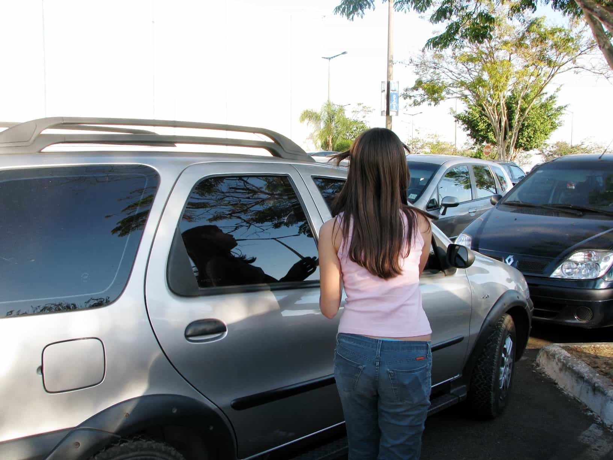

Hesse Kassel is an Australian economist. He stopped chasing money and chased women and made children instead. He blogs right here


I remember a time when everyone was talking about a book. The title was Men are From Mars, Women are From Venus. Most men have probably heard of it, some men may have read it, somewhere there could even be a poor chap who took it seriously!
The prospect of that poor man struggling to put the advice into action gives me a cold shiver. What I need is a rival analogy. One which covers the red pill truths about the mating market. One which is about something men enjoy. I found one.
Women are like cars. Men are like drivers. The rest, like driving itself, flows pretty naturally once you get the idea.

Driving a good car is a satisfying, liberating experience. At the time it feels free, but when you add up the costs of acquiring, running and maintaining a car it is actually one of the most expensive things a driver does. A driver silly enough to take control of a car while drunk often finds that it looks a lot better before than after. Please take care at all times, if you crash you might end up broke, injured or even in jail. As for the smashed car, many drivers don’t even want to look at them afterwards!
Unfortunately not all drivers can have a good car. Those drivers are often quite embarrassed. New cars purr contentedly when driven, but when owned and driven for too long they can make more alarming sounds. Sometimes they even screech. Often after a period of ownership the poor driver finds that the car refuses to drive at all and he is left with a useless husk hanging around that is of no value to anyone.
When considering purchasing a car it’s always good to take your time. Careless selection can lead to big problems and can be far more expensive than you expect. Buyers usually start by examining the bodywork, age and miles driven. Some people buy cars without a test drive or even without seeing them. This is OK for a new one that’s never been driven before. Otherwise you will regret it, I promise you.
Alterations to the bodywork, decorative baubles hanging off or pictures drawn on them can seem attractive at first glance, but are a clear go away sign for anyone considering ownership. As for cars that belch smoke, don’t even think about it.
Driving a car off the lot is an exhilarating experience for sure. When first driving a really hot car there can be a moment of release which is truly a high point in a man’s life. Often that moment of intense feeling is hard to describe or justify later. At the time though the burst of freedom and pleasure is not to be questioned or refused. Unfortunately without drastic—often painful—action, a newly acquired car is still around the next day and buyers remorse is common.
The rental vehicle service is mostly used by drivers who either can’t afford a car, have a car which just won’t drive, or are out of town and unable to use their regular vehicle. They can be picked up quickly and are available on a per use basis, but they can be expensive. A driver who uses a really cheap rental service will often find the car is dangerous or has obscure mechanical problems. Drivers often use them hard and in ways they wouldn’t dream of with their own cars. No matter how much the rental company tries to clean them up it’s always just a little bit disgusting to think about all the previous drivers that might have dirtied them. It’s probably wiser to give them a good clean and wear gloves or something before use. They age and accumulate miles on the clock quicker than other cars and should never be purchased, even if they seem like a good deal.
Different countries produce very different cars. American cars are big, have low fuel economy and are not known for their high quality. European cars are expensive, but often stylish and much sought after. Drivers of European cars often like to show them off. The production share of American and European cars keeps falling year by year and you can see why. Asia is the largest producing region and is known for cheap, practical and reliable models. If you come across a car that was made in Africa think carefully, they are extremely dangerous to drive, even if you wear a seat belt.
Occasionally, other would-be drivers steal cars but that doesn’t usually end well for the car. It often gets broken down for parts or taken for a joy ride and then dumped in a gutter somewhere. The original drivers usually don’t want them back once this happens.
Most drivers only own one car, or none. If a driver owns a fleet of vehicles for his exclusive use then you could say he is seriously in business!
So next time you are thinking about women, just imagine they are cars. Good choices might seem a lot easier to make. Finally, never give in to the temptation to drive a truck instead—bigger is not better, and they are a bitch to park afterwards.
Read More: Women Belong At Home, Not At The Office